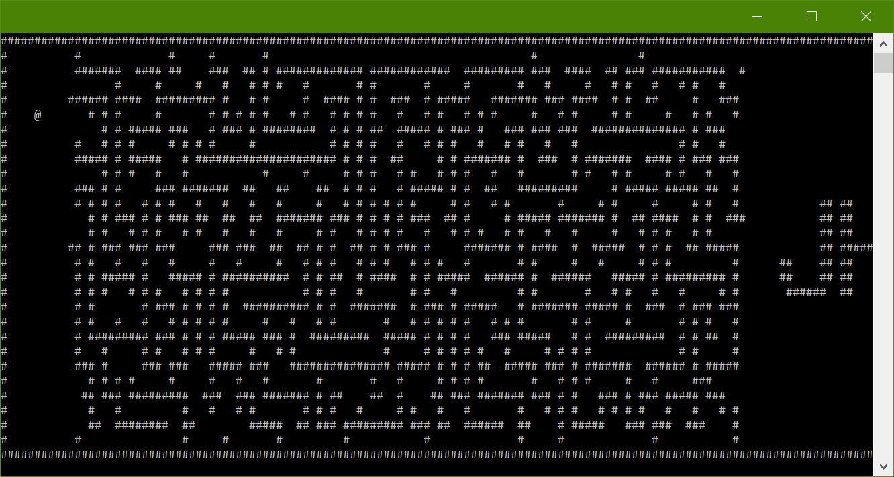

Labyrinth

Aftere starting the game, we're presented with a map (@ - player, # - walls).
 
The objective, as can be seen from a piece of the flag visible on the
right side of the screen, is to get to the other side of the maze.
But, a game where you simply have to find a way through isn't very interesting,
so the maze is generated in such a way that there's never a
way from where
the player is standing, to where the flag is.

So, now that we know that what we're supposed to do is impossible without cheating, what's the first thing to do? Decomiple the .pyc file.
Python is very nice in this regard, as the sourcecode obtained this way is usually almost identical to the original code.
On the other hand, Python also supports unicode characters in variable names.

That doesn't look very inviting.
And while the original does run, decompiled version isn't always as successful.
So, let's use an alternative approach.
The game seems to be connecting somewhere, possibly downloading the map (which the flag is a part of).
Maybe this is as easy as looking at the network traffic?

(blue = client -> server; pink = server -> client)
Except for the column id's and the authentication sequence in the beginning, this looks pretty simple - client is asking for and then receiving
column descriptions.
Unfortunately, client requests missing columns when they are actually
needed - when the character moves enough to trigger scrolling
We can't read the map from the network traffic and we can't write our own client because we have no idea what happend to the column id's.
(Side note: the server will kick players requesting columns too far away from their position, and we wouldn't know the order anyways)
But, let's take another look at that screenshot.

Looks like the client is only sending horizontal movements. This means that the server doesn't have enough information to check whether or not the player is moving through walls!
(It could check if it's possible to get as far as the client did if
it mapped out how far to the right it's ever possible to get in the maze,
but, spoiler alert, it does not.)
Let's remove the ceiling from the map using python for a simple mitm attack.


What does this code do?
It listens on port 31337 for incoming connections, and when one is estabilished,
it connects to the original labyrinth server relaying traffic
back and forth.
When the authentication success message is detected, it starts changing every message coming from the server
so that they start with a 0 - effectively removing ceiling from the map.
(at that point, server only responds with column descriptions, or kick messages, we don't care what happens if we get kicked)
(Side note: this code assumes that the column descriptions are received entirely, and one by one.
This doesn't always have to be the case, but it works well enough here.)
After adding "127.0.0.1 jhtc4bsk.jhtc.pl" to /etc/hosts and starting the program, the task is solved.
Additional links:
traffic_short.txt - Shortened version of the network capture, with notes
traffic.txt - Full network traffic capture
code.txt - Parts of the original sourcecode